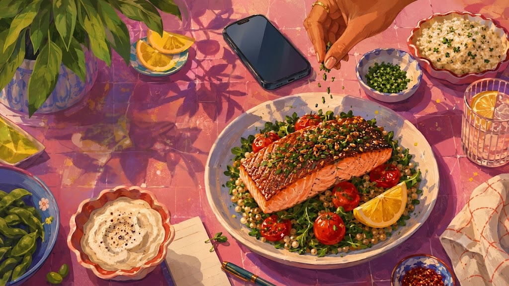

Mobile rule
These are structural explorations only: palette, scale, image treatment, and editorial cadence. No app logic, no full-site refactor, no production homepage rewrite.

Paper, Stone, and restraint. The page behaves like a beautifully printed cookbook spread: one strong image, quiet book-weight body copy, and a single Tomato interaction moment.
HAY and Dusen energy without chaos: section breaks become giant slabs of Sage, Chalky Yellow, and Terracotta. The color planes do the organizing instead of dashboard borders.

NYT Cooking discipline with Platter intelligence: recipes, rankings, stories, and Batch all live in a rigorous editorial system.

What to order when the week gets loud, what to skip, and the chef moves that make delivered dinner feel freshly plated.